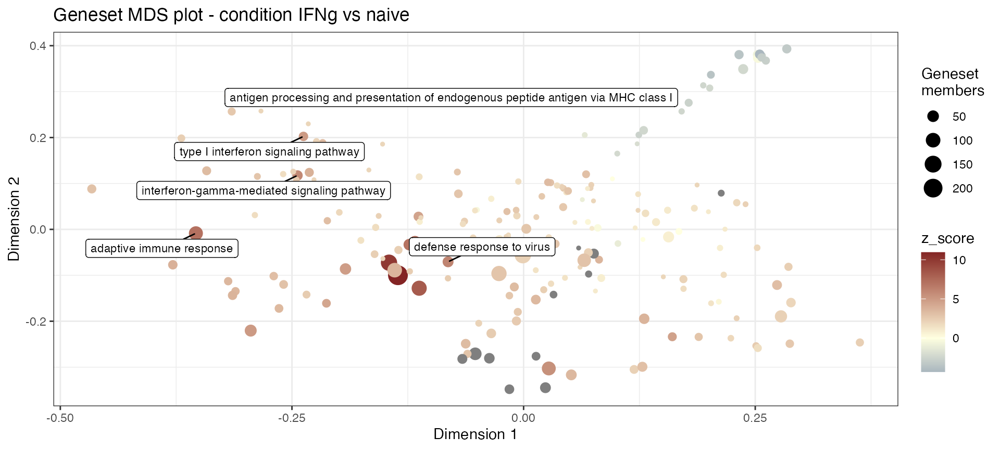
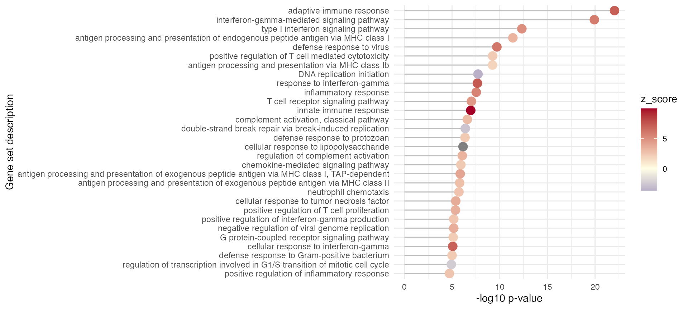

The GeneTonic User’s
Guide
Federico Marini
Institute of Medical Biostatistics, Epidemiology and Informatics (IMBEI), MainzCenter for Thrombosis and Hemostasis (CTH), Mainzmarinif@uni-mainz.de
Annekathrin Ludt
Institute of Medical Biostatistics, Epidemiology and Informatics (IMBEI), Mainzanneludt@uni-mainz.de
27 March 2024
Source:vignettes/GeneTonic_manual.Rmd
GeneTonic_manual.RmdCompiled date: 2024-03-27
Last edited: 2022-04-04
License: MIT + file LICENSE
Introduction
This vignette describes how to use the GeneTonic package for analyzing and integrating the results from Differential Expression analysis and functional enrichment analysis.
This package provides a Shiny application that aims to combine at different levels the existing pieces of the transcriptome data and results, in a way that makes it easier to generate insightful observations and hypothesis - combining the benefits of interactivity and reproducibility, e.g. by capturing the features and gene sets of interest highlighted during the live session, and creating an HTML report as an artifact where text, code, and output coexist.
In order to use GeneTonic in your workflow, the following inputs are required:
-
dds, aDESeqDataSetcontaining the expression matrix; -
res_de, aDESeqResults, i.e. aDataFramestoring the results of the differential expression analysis; -
res_enrich, adata.framewith the results of functional enrichment analysis; -
annotation_obj, adata.framewith the correspondence between identifiers for the features under inspection in theddsobject.
This workflow has mainly been tested with expression matrices with Ensembl identifiers, which are consistent and unambiguous across different releases, and results from functional enrichment analysis originating from ORA (OverRepresentation Analysis) methods, on the Gene Ontology signature database. It may need to be slightly adjusted to work with other formats and sources, but the core functionality will remain available.
In the remainder of this vignette, we will illustrate the main features of GeneTonic on a publicly available dataset from Alasoo, et al. “Shared genetic effects on chromatin and gene expression indicate a role for enhancer priming in immune response”, published in Nature Genetics, January 2018 (Alasoo et al. 2018) doi:10.1038/s41588-018-0046-7.
The data is made available via the macrophage Bioconductor package, which contains the files output from the Salmon quantification (version 0.12.0, with Gencode v29 reference), as well as the values summarized at the gene level, which we will use to exemplify.
In the macrophage experimental setting, the samples are
available from 6 different donors, in 4 different conditions (naive,
treated with Interferon gamma, with SL1344, or with a combination of
Interferon gamma and SL1344). We will restrict our attention on the
comparison between Interferon gamma treated samples vs naive
samples.
Getting started
To install this package, start R and enter:
if (!requireNamespace("BiocManager", quietly = TRUE))
install.packages("BiocManager")
BiocManager::install("GeneTonic")Once installed, the package can be loaded and attached to your current workspace as follows:
If you have all four input elements ready, you can launch the
GeneTonic() app by running:
GeneTonic(dds = dds_object,
res_de = res_de_object,
res_enrich = res_enrich_object,
annotation_obj = annotation_object,
project_id = "myFirstGeneTonic")In this vignette, we showcase the functionality of GeneTonic
using the gene-level summarized version of the macrophage
dataset. If you want to dive in and start playing with the app
immediately, you can simply run:
example("GeneTonic", ask = FALSE)Otherwise, you can follow the next chunks of code to generate the
required input objects, step by step. In case some formatting
requirements are expected, these will be specified in the text/comments,
and they will be checked internally upon launching the
GeneTonic app.
For running GeneTonic, you will need the four components
mentioned above as parameters.
-
dds: First you will need aDESeqDataSet, which is the main component in theDESeq2framework and extends the widely adoptedSummarizedExperimentclass. This object will store the information related to the expression matrix.
library("macrophage")
library("DESeq2")
data("gse", package = "macrophage")
dds_macrophage <- DESeqDataSet(gse, design = ~line + condition)
# changing the ids to Ensembl instead of the Gencode used in the object
rownames(dds_macrophage) <- substr(rownames(dds_macrophage), 1, 15)
dds_macrophage
#> class: DESeqDataSet
#> dim: 58294 24
#> metadata(7): tximetaInfo quantInfo ... txdbInfo version
#> assays(3): counts abundance avgTxLength
#> rownames(58294): ENSG00000000003 ENSG00000000005 ... ENSG00000285993 ENSG00000285994
#> rowData names(2): gene_id SYMBOL
#> colnames(24): SAMEA103885102 SAMEA103885347 ... SAMEA103885308 SAMEA103884949
#> colData names(15): names sample_id ... condition line-
res_de: Next you are going to need the results of Differential Expression analysis, computed on thedds_macrophageobject you just obtained.The expected format is a
DESeqResultsobject. Here we are going to contrast two different conditions,IFNgandnaive, while controlling for the cell line of origin (which has 6 levels, namely naive, IFNg, IFNg_SL1344, and SL1344).We start by filtering lowly expressed features (at least 10 counts in at least 6 samples - 6 being the size of the smallest group). Then, we test against a null hypothesis of a log2FoldChange of 1 (instead of the default value of 0), in order to specify that we want to call DE genes with a consistent and robust expression change. Finally, we add the gene symbol to the output
DataFrame.
keep <- rowSums(counts(dds_macrophage) >= 10) >= 6
dds_macrophage <- dds_macrophage[keep, ]
dds_macrophage
#> class: DESeqDataSet
#> dim: 17806 24
#> metadata(7): tximetaInfo quantInfo ... txdbInfo version
#> assays(3): counts abundance avgTxLength
#> rownames(17806): ENSG00000000003 ENSG00000000419 ... ENSG00000285982 ENSG00000285994
#> rowData names(2): gene_id SYMBOL
#> colnames(24): SAMEA103885102 SAMEA103885347 ... SAMEA103885308 SAMEA103884949
#> colData names(15): names sample_id ... condition line
dds_macrophage <- DESeq(dds_macrophage)
# vst_macrophage <- vst(dds_macrophage)
res_macrophage_IFNg_vs_naive <- results(dds_macrophage,
contrast = c("condition", "IFNg", "naive"),
lfcThreshold = 1, alpha = 0.05)
res_macrophage_IFNg_vs_naive$SYMBOL <- rowData(dds_macrophage)$SYMBOL
## To speed up the operations in the vignette, we can also load this object directly
data("res_de_macrophage")
head(res_macrophage_IFNg_vs_naive)
#> log2 fold change (MLE): condition IFNg vs naive
#> Wald test p-value: condition IFNg vs naive
#> DataFrame with 6 rows and 7 columns
#> baseMean log2FoldChange lfcSE stat pvalue padj SYMBOL
#> <numeric> <numeric> <numeric> <numeric> <numeric> <numeric> <character>
#> ENSG00000000003 171.571 -0.2822450 0.3005710 0.00000 1.00000e+00 1.00000e+00 TSPAN6
#> ENSG00000000419 967.751 0.0391223 0.0859708 0.00000 1.00000e+00 1.00000e+00 DPM1
#> ENSG00000000457 682.433 1.2846179 0.1969067 1.44545 1.48333e-01 1.00000e+00 SCYL3
#> ENSG00000000460 262.963 -1.4718762 0.2186916 -2.15772 3.09493e-02 4.09728e-01 C1orf112
#> ENSG00000000938 2660.102 0.6754781 0.2360530 0.00000 1.00000e+00 1.00000e+00 FGR
#> ENSG00000000971 3052.123 4.9871107 0.4964284 8.03159 9.62155e-16 1.37057e-13 CFH-
res_enrich: With the DE results of the previous step, we are going to extract the vector of DE genes (viadeseqresult2df), as well as the list of genes to be used as background, and feed these two objects into a function that computes the functional enrichment of the DE genes.We are going to use the ORA method implemented in topGO, wrapped in the function
topGOtableavailable in the pcaExplorer package, which by default uses theBPontology and theelimmethod to decorrelate the GO graph structure and deliver less redundant functional categories. You can also use as an alternative theenrichGOfunction from clusterProfiler.
library("AnnotationDbi")
de_symbols_IFNg_vs_naive <- deseqresult2df(res_macrophage_IFNg_vs_naive, FDR = 0.05)$SYMBOL
bg_ids <- rowData(dds_macrophage)$SYMBOL[rowSums(counts(dds_macrophage)) > 0]
library("topGO")
topgoDE_macrophage_IFNg_vs_naive <-
pcaExplorer::topGOtable(de_symbols_IFNg_vs_naive,
bg_ids,
ontology = "BP",
mapping = "org.Hs.eg.db",
geneID = "symbol",
topTablerows = 500)
## To speed up the operations in the vignette, we also load this object directly
data("res_enrich_macrophage")
head(topgoDE_macrophage_IFNg_vs_naive, 2)
#> GO.ID Term Annotated Significant Expected
#> 1 GO:0002250 adaptive immune response 323 89 17.93
#> 2 GO:0060333 interferon-gamma-mediated signaling pathway 82 34 4.55
#> Rank in p.value_classic p.value_elim p.value_classic
#> 1 5 9.2e-23 NA
#> 2 18 1.2e-20 9.9e-22
#> genes
#> 1 B2M,BCL6,BTN3A1,BTN3A2,BTN3A3,C1QB,C1R,C1RL,C1S,C2,C3,C4A,C4B,CD1A,CD1C,CD274,CD28,CD40,CD7,CD74,CD80,CEACAM1,CLEC10A,CLEC6A,CTLA4,CTSS,ERAP2,EXO1,FGL1,FGL2,GCNT3,GPR183,HLA-A,HLA-B,HLA-C,HLA-DMA,HLA-DMB,HLA-DOA,HLA-DOB,HLA-DPA1,HLA-DPB1,HLA-DQA1,HLA-DQB1,HLA-DQB2,HLA-DRA,HLA-DRB1,HLA-DRB5,HLA-E,HLA-F,HLA-G,ICAM1,IL12A,IL12RB1,IL18BP,IL27,IRF1,IRF7,ITK,JAK2,JAK3,KLRK1,LAG3,LAMP3,LILRA1,LILRB3,LYN,MCOLN2,P2RX7,PDCD1,PDCD1LG2,RELB,RIPK2,RNF19B,RSAD2,SERPING1,SIT1,SLAMF1,SLAMF6,SLAMF7,SLC11A1,TAP1,TAP2,TBX21,TLR8,TNFRSF11A,TNFRSF21,TNFSF13B,TNFSF18,ZC3H12A
#> 2 B2M,CAMK2D,CIITA,GBP1,GBP2,HLA-A,HLA-B,HLA-C,HLA-DPA1,HLA-DPB1,HLA-DQA1,HLA-DQB1,HLA-DQB2,HLA-DRA,HLA-DRB1,HLA-DRB5,HLA-E,HLA-F,HLA-G,ICAM1,IRF1,IRF7,JAK2,MT2A,NLRC5,NMI,OAS2,PARP14,PML,SOCS1,STAT1,TRIM22,TRIM31,VCAM1Since in this step the object can be created from different methods,
but the GeneTonic main functions require some specific
columns to be present, we have created some functions to convert the
output of the upstream tools into a format compatible with
GeneTonic. The functions shake_enrichResult()
and shake_topGOtableResult() serve this purpose - if your
favorite tool might be different, you can write your own conversion
function and contribute it to GeneTonic.
res_enrich_macrophage <- shake_topGOtableResult(topgoDE_macrophage_IFNg_vs_naive)
colnames(res_enrich_macrophage)
#> [1] "gs_id" "gs_description" "gs_pvalue" "gs_genes" "gs_de_count"
#> [6] "gs_bg_count" "Expected"-
annotation_obj: Last object required is the annotation data frame, i.e. a simple data frame composed at least of two columns,gene_id, with a set of unambiguous identifiers (e.g. ENSEMBL ids) corresponding to the row names of theddsobject, andgene_name, containing e.g. HGNC-based gene symbols. This object can be constructed via theorg.eg.XX.dbpackages, e.g. with convenience functions such aspcaExplorer::get_annotation_orgdb(). Here we display the general way of obtaining this object.
library("org.Hs.eg.db")
anno_df <- data.frame(
gene_id = rownames(dds_macrophage),
gene_name = mapIds(org.Hs.eg.db, keys = rownames(dds_macrophage), column = "SYMBOL", keytype = "ENSEMBL"),
stringsAsFactors = FALSE,
row.names = rownames(dds_macrophage)
)
## alternatively:
# anno_df <- pcaExplorer::get_annotation_orgdb(dds_macrophage, "org.Hs.eg.db", "ENSEMBL")For some operations in the main app and in the single functions,
sometimes it is required to have aggregated scores for the
res_enrich data frame.
We can do so by calling get_aggrscores() on the
combination of objects we just generated. This adds two columns to the
provided res_enrich object, z_score and
aggr_score, which summarize at the gene set level the
effect (log2FoldChange) of the differentially expressed genes which are
its members. In particular, the z score attempts to determine the
“direction” of change, computed as \(z =
\frac{(upgenes - downgenes)}{\sqrt{(upgenes + downgenes)}}\),
regardless of the effect size of the single members of the gene set.
res_enrich_macrophage <- get_aggrscores(res_enrich = res_enrich_macrophage,
res_de = res_macrophage_IFNg_vs_naive,
annotation_obj = anno_df,
aggrfun = mean)All set!
Once you have the four objects specified above, you can set the
project_id to be a character string at wish, and you can
just launch the GeneTonic() app:
GeneTonic(dds = dds_macrophage,
res_de = res_macrophage_IFNg_vs_naive,
res_enrich = res_enrich_macrophage,
annotation_obj = anno_df,
project_id = "GT1")Alternatively (this applies from version >= 1.3.0), it is possible
to provide a single list object to GeneTonic() and many of
its functions.
Please note that the arguments should be named as specified in the
example below.
gtl <- GeneTonicList(
dds = DESeq2::estimateSizeFactors(dds_macrophage),
res_de = res_macrophage_IFNg_vs_naive,
res_enrich = res_enrich_macrophage,
annotation_obj = anno_df
)
# if nothing is returned, the object is ready to be provided to GeneTonic
checkup_gtl(gtl)
if (interactive()) {
GeneTonic(gtl = gtl)
}From version 2.0.0 onwards, GeneTonic offers the
possibility to upload the GeneTonicList objects at runtime
- these need to be provided as serialized RDS objects (which can be
generated when calling saveRDS(), or alternatively exported
from within the GeneTonic app).
This means it is possible to use GeneTonic also as a
server-like application for internal deployment. An exemplary
app.R file to be used on a Shiny Server could be as simple
as
max_gtl_size <- 250 ## the max size in Megabytes for the gtl object to be uploaded
library("GeneTonic")
GeneTonic(size_gtl = max_gtl_size)To upload your GeneTonicList object, click on the
“Browse” widget and select the specific RDS file from the explorer
window that will open up.
If the upload was successful, GeneTonic will make all the
panels available, ready to be interactively explored. If providing the
data in a wrong or unexpected format, the app should be able to
recognize this and notify the users in the lower right corner.
Screenshot of the GeneTonic application, when launched as a
server where users can directly upload GeneTonicList
objects. Information on the format and content for this object type are
provided in the collapsible element on the right side of the dashboard
body.
Description of the GeneTonic user interface
The GeneTonic app is built with shiny, and its
layout is built around the components of bs4Dash, a
modern looking dashboard based on Bootstrap 4.
Header (navbar)
The dashboard navbar (as it is called in bs4Dash)
contains two dropdown menus, which can be expanded by clicking on the
respective icons ( and
). These provide additional buttons to do one
the following:
- - inspect the GeneTonic vignette (either the one installed in bundle with the package, or the online version)
-
- read some first help
information on
GeneTonic(what the package does in brief, what is required to run properly) -
- display information about the
current session (via
sessionInfo()) - - show some general information on GeneTonic, like where to find its development version (and contribute to that), or how to cite this tool.
Additionally, one fundamental button is present in the navbar - labeled “Bookmark”, with the heart icon. This serves the purpose of bookmarking genes and gene sets of interest while exploring your data in an interactive session. This functionality will be exploited in the Bookmarks section of the app, where a complete HTML report can be generated as a reproducible artifact.
Sidebar
On the left side of the app, by clicking on the
menu bar icon (or if the app is viewed in
full screen, by simply moving the mouse over to the left side), the
sidebar menu is triggered. This constitutes the main way to access the
different tabs of GeneTonic(), which will be explained in
more detail in the next section (@ref(functionality)).
Controlbar
The controlbar is triggered by clicking on the cogs icon on the upper right part of the navbar. There you can find widgets that control the appearance of output (plots, tables, graphs) in multiple tabs of the main application, such as for example the number of gene sets to focus your attention on.
Body
The main body of the GeneTonic application is structured
in tabs that are activated by clicking on the respective icons or text
in the sidebar.
While the Welcome tab might be self-explanatory, the functionality of
each tab can go in depth, and new users can benefit of the question
circle button () button to trigger
an interactive tour of GeneTonic, which allows users to
learn the basic usage mechanisms by doing. During a tour, the
highlighted elements respond to the user’s actions, while the rest of
the UI is kept shaded. Tours can be interrupted anytime by clicking
outside of the focused window, and arrows (left, right) can be used as
well to navigate between steps. The tour functionality is provided by
the beautiful rintrojs
package.
The GeneTonic functionality
The main GeneTonic app is structured in different
panels, and each of these is presented in detail in the subsequent
sections.
The Welcome panel
This panel in intended to give an overview on the different
ingredients you just provided for launching GeneTonic.
Collapsible elements, colored each by the typology of data it refers to, contain the underlying tabular information, and a value box provides a quick summary on the dimensions of the input parameters.
The tables are rendered with DT::datatable, which
provides a practical interface for exploring, sorting, and filtering.
This framework is also extendable, for example as we do for the
log2FoldChange column in the res_de object,
where the values are also visually encoded as diverging bars of
different color based on the expression change direction.
In the Welcome panel, the GeneSpector box will also enable users to
explore a gene expression plot for any of the genes in the
dds object, irrespective of them being members or not of
any geneset.
To do so, select a gene from the dropdown menu (autocompletion is
supported), and a covariate from the “Group/color by” selector in the
control menu on the right (opened by clicking on the cogs icon).
If launched without providing input data (as individual components,
or as GeneTonicList object), GeneTonic offers
the possibility to upload the GeneTonicList objects at
runtime.
The upload functionality is showing in this panel, and enables
GeneTonic being used also as a server-like application for
internal deployment.
The Gene-Geneset panel
This panel has as its main component an interactive bipartite graph illustrating the relationship between genesets and genes that belong to them. One of the relevant parameters for this output is the number of gene sets to be displayed, adjustable from the widget in the control panel on the right.
Such a representation is particularly useful to see overlap between terms, and grasp the way how different genes may play a concerting role in different processes.
The color and shape of the nodes depend on the entity they are related to:
- genes are shown as ellipses, colored with a palette diverging from a neutral color to red (log2FC > 0) or to blue (log2FC < 0)
- gene sets are enclosed in gold boxes
The interactivity in this graph is essential for zooming, panning, and selecting its nodes. The node selection, in particular, triggers a drill-down exploration, which populates a box on the right side, either with a signature heatmap (for a gene set), or with an expression plot, split by the experimental covariates of interest (for a gene) - this behavior can be controlled by the “Group/color by” selectize widget in the control sidebar. In both cases, some HTML content is also generated, with buttons linking to external databases where to retrieve additional information (e.g. ENSEMBL, NCBI, AmiGO, …).
A demonstration of how to use this panel effectively is provided by the tour, triggered by clicking on the question circle button () button in the upper right corner of the tab.
Bookmarking from the Gene-Geneset panel: When clicking on the Bookmark button while in this tab, it is possible to add to the shortlisted items of interest both genes and gene sets. To do so, while one of the nodes is selected, click on the button with the mouse - or alternatively, click on the Left Ctrl button of your keyboard. A notification will be triggered, informing the status of the bookmarked elements.
The Enrichment Map panel
This panel, similar to the Gene-Geneset tab, has again an interactive graph of a subset of the gene sets (you can control again the number of included sets from the control sidebar). This is also called an enrichment map - it is also possible to generate them in tools such as Cytoscape. In this case, the genesets are directly connected by an edge, where the thickness encodes the degree of similarity (e.g. in terms of overlap) between them; sets below a similarity threshold are not displayed for the sake of better clarity.
The size of the node encodes the information of the number of genes
detected as Differentially Expressed (from the column
gs_de_count), while the color is representative of the
computed Z score for each set. This value is computed as \(z = \frac{(upgenes - downgenes)}{\sqrt{(upgenes +
downgenes)}}\) and is indicative of the expression changes of the
genes assigned to a particular set. Please, keep in mind that methods
based on overrepresentation analysis only do not account for the
topology that might be behind the set of interacting features (i.e. an
upregulated gene involved in inhibition of a pathway would still be
counted as a positive element in the equation above).
The z_score and aggr_score (in the simplest
form, a mean of the log2FoldChange values for all the genes of a set)
can be easily computed with the get_aggrscores(), which
appends these scores for each gene set to the original
res_enrich data frame.
The interactive flavor in this tab permits a quick exploration of the signature heatmaps for the genesets of interest by simply clicking on a node; this also triggers the display of some HTML content, if related to a Gene Ontology term.
A demonstration of how to use this panel effectively is provided by the tour, triggered by clicking on the question circle button () button in the upper right corner of the tab.
In the section below the interactive enrichment map, the
functionality for the distillation of gene sets into
meta-genesets is provided.
In brief, a community detection algorithm is run on the graph underlying
the enrichment map, and the additional information extracted is rendered
as a table, linked to a meta-geneset box to display the expression
signature for all its member genes.
Bookmarking from the Enrichment Map panel: If the user clicks on the Bookmark button while in this tab, it will add the selected node to the shortlist of genesets, visible later in the Bookmarks panel. The Left Ctrl button of your keyboard can again be used for this purpose, and this will trigger a notification in the lower right part of the screen.
The Overview panel
This panel presents to the user a series of summary plots, based on
the outputs of enhance_table() and
gs_volcano(), aiming to provide a mean to summarize the
most relevant genesets in the res_enrich object. The number
of displayed (or labeled, according to each function) genesets can be as
usual controlled by the widget in the right sidebar.
We avoid (re)rendering all plots at once by placing them as content
of different tabs in a bs4TabCard container - this allows
the user to navigate in a more agile way to the desired output
elements.
Interactive versions of the plots are returned via calls to
ggplotly.
A demonstration of how to use this panel effectively is provided by the tour, triggered by clicking on the question circle button () button in the upper right corner of the tab.
The GSViz panel
This panel, similarly to the Overview panel, presents a variety of plots visualizing the gene sets - and their mutual relationships, or their behavior across samples. This includes, for example:
- a genesets by sample heatmap (via
gs_scores()andgs_scoresheat()), with a score for each matrix element corresponding to the sum of the standardized expression values of its components - a genesets-gene Sankey diagram (via
gs_alluvial(), aliased togs_sankey()), to represent the N:N membership relationships - a summary heatmap (via
gs_summary_heat()) to display the memberships and at the same time the expression change of each gene set member - a multi-dimensional scaling (MDS) plot, based on
gs_mds(), to provide a 2d visualization of the distance among genesets (based on a similarity measure e.g. their overlap or other criteria, such as their semantic similarity) - a compact summary of
res_enrich, viags_summary_overview(), where aggregated scores and significance can be displayed on the same plot - for this, there are functions to compare differentres_enrichobjects (gs_summary_overview(),gs_summary_overview_pair()) - alternative visual representation of the
res_enrichobjects, based ongs_radar()(equivalent togs_spider()) andgs_dendro()
As in many other panels, the control over the number of genesets displayed is tweaked with the widget in the right sidebar, “Number of genesets”.
A demonstration of how to use this panel effectively is provided by the tour, triggered by clicking on the question circle button () button in the upper right corner of the tab.
The Bookmarks panel
In this panel, the user can obtain a complete overview on the bookmarked features of interest, both genes (left side) and genesets (right side).
During a live exploration session, it might be tricky to recall the exact aspect of each point of interest.
Below the interactive DT::datatable objects, the content
of each table can also be separately downloaded by clicking on the
respective button. Moreover, there is a button (with the cocktail icon
) that triggers the generation of a
content-rich report which will focus on all the shortlisted elements.
This leverages a template report delivered as a part of GeneTonic,
which accesses the input elements and the reactive values for the
bookmarks, based on the happy_hour() function.
If a user already knows a set of features and geneset of interest, it
is also possible to practically call happy_hour() directly
from the command line (see the example in the chunk below). Please keep
in mind that the identifiers to be used should match the values used as
row names of the dds object and as gs_id
column of the original res_enrich input.
happy_hour(dds = dds_macrophage,
res_de = res_de,
res_enrich = res_enrich,
annotation_obj = anno_df,
project_id = "examplerun",
mygenesets = res_enrich$gs_id[c(1:5,11,31)],
mygenes = c("ENSG00000125347",
"ENSG00000172399",
"ENSG00000137496")
)This report will serve as a useful means to generate a permanent and reproducible analysis output, that can be further stored or shared.
Ideally, each live session with GeneTonic could
terminate with a call to happy_hour() - admittedly, an
aperitivo should start with that, and not end - please accept our
apologies :) .
A demonstration of how to use this panel effectively is provided by the tour, triggered by clicking on the question circle button () button in the upper right corner of the tab.
In this panel, an export button to a
SummarizedExperiment object to be provided as input to the
iSEE
package has been added in version >= 1.2.0. This enables further and
fine-grained visualization options in the iSEE framework -
if the flavors of GeneTonic are not yet what you would
want, you might find an excellent venue there.
Using the GeneTonic functions
The GeneTonic package provides, apart from the main app where to perform the analysis in an interactive way, a number of functions which can be used also as standalone components for a workflow.
This sections contains some showcase examples on how to use them.
Overview functions: genes and gene sets
Summarize the top genesets by displaying the logFC of each set’s
components - and transform the ggplot output into a
plotly visualization, where tooltips can deliver additional
information:
p <- enhance_table(res_enrich_macrophage,
res_macrophage_IFNg_vs_naive,
n_gs = 30,
annotation_obj = anno_df,
chars_limit = 60)
p
Display the relationship between genesets and genes that belong to them (useful e.g. to see overlap between terms):
gs_alluvial(res_enrich = res_enrich_macrophage,
res_de = res_macrophage_IFNg_vs_naive,
annotation_obj = anno_df,
n_gs = 4)Display a bipartite graph where genesets and genes are included, and make it interactive:
ggs <- ggs_graph(res_enrich_macrophage,
res_de = res_macrophage_IFNg_vs_naive,
anno_df,
n_gs = 20)
ggs
#> IGRAPH d72746c UN-- 266 656 --
#> + attr: name (v/c), nodetype (v/c), shape (v/c), color (v/c), title (v/c)
#> + edges from d72746c (vertex names):
#> [1] adaptive immune response--B2M adaptive immune response--BCL6
#> [3] adaptive immune response--BTN3A1 adaptive immune response--BTN3A2
#> [5] adaptive immune response--BTN3A3 adaptive immune response--C1QB
#> [7] adaptive immune response--C1R adaptive immune response--C1RL
#> [9] adaptive immune response--C1S adaptive immune response--C2
#> [11] adaptive immune response--C3 adaptive immune response--C4A
#> [13] adaptive immune response--C4B adaptive immune response--CD1A
#> [15] adaptive immune response--CD1C adaptive immune response--CD274
#> + ... omitted several edges
# could be viewed interactively with
library(visNetwork)
library(magrittr)
ggs %>%
visIgraph() %>%
visOptions(highlightNearest = list(enabled = TRUE,
degree = 1,
hover = TRUE),
nodesIdSelection = TRUE)Summary representations
Plot an enrichment map of the enrichment results, where you can
choose with n_gs the number of top genesets to be
displayed, and specify in gs_ids the gene set identifiers -
these will be merged together for each function’s context:
em <- enrichment_map(res_enrich_macrophage,
res_macrophage_IFNg_vs_naive,
n_gs = 30,
color_by = "z_score",
anno_df)
library("igraph")
library("visNetwork")
library("magrittr")
em %>%
visIgraph() %>%
visOptions(highlightNearest = list(enabled = TRUE,
degree = 1,
hover = TRUE),
nodesIdSelection = TRUE)Expanding on the enrichment map, the distilled content of the
res_enrich can be represented as enhanced tables and
interactive graphs, depicting the membership of the respective
meta-genesets
distilled <- distill_enrichment(res_enrich_macrophage,
res_macrophage_IFNg_vs_naive,
anno_df,
n_gs = 60,
cluster_fun = "cluster_markov")
DT::datatable(distilled$distilled_table[,1:4])
dg <- distilled$distilled_em
library("igraph")
library("visNetwork")
library("magrittr")
# defining a color palette for nicer display
colpal <- colorspace::rainbow_hcl(length(unique(V(dg)$color)))[V(dg)$color]
V(dg)$color.background <- scales::alpha(colpal, alpha = 0.8)
V(dg)$color.highlight <- scales::alpha(colpal, alpha = 1)
V(dg)$color.hover <- scales::alpha(colpal, alpha = 0.5)
V(dg)$color.border <- "black"
visNetwork::visIgraph(dg) %>%
visOptions(highlightNearest = list(enabled = TRUE,
degree = 1,
hover = TRUE),
nodesIdSelection = TRUE,
selectedBy = "membership")Another possibility to summarize the result of enrichment is by
applying fuzzy clustering on it to detect groups of related genesets,
with the peculiarity that a geneset can belong to different clusters -
this reflects the original implementation of DAVID (Huang, Sherman, and Lempicki 2009).
The gs_fuzzyclustering() function returns a table with
additional columns, related to the cluster id and the status for the
geneset in that cluster (“Representative” or “Member”, where the
Representative geneset is the one with lowest p-value in that
cluster).
res_enrich_subset <- res_enrich_macrophage[1:100, ]
fuzzy_subset <- gs_fuzzyclustering(
res_enrich = res_enrich_subset,
n_gs = nrow(res_enrich_subset),
gs_ids = NULL,
similarity_matrix = NULL,
similarity_threshold = 0.35,
fuzzy_seeding_initial_neighbors = 3,
fuzzy_multilinkage_rule = 0.5)
# show all genesets members of the first cluster
fuzzy_subset[fuzzy_subset$gs_fuzzycluster == "1", ]
#> gs_id gs_description gs_pvalue
#> GO:0060333 GO:0060333 interferon-gamma-mediated signaling pathway 1.2e-20
#> GO:0060337 GO:0060337 type I interferon signaling pathway 4.8e-13
#> GO:0034341 GO:0034341 response to interferon-gamma 2.2e-08
#> GO:0045087 GO:0045087 innate immune response 1.1e-07
#> GO:0071346 GO:0071346 cellular response to interferon-gamma 8.5e-06
#> GO:0019221 GO:0019221 cytokine-mediated signaling pathway 7.4e-04
#> gs_genes
#> GO:0060333 B2M,CAMK2D,CIITA,GBP1,GBP2,HLA-A,HLA-B,HLA-C,HLA-DPA1,HLA-DPB1,HLA-DQA1,HLA-DQB1,HLA-DQB2,HLA-DRA,HLA-DRB1,HLA-DRB5,HLA-E,HLA-F,HLA-G,ICAM1,IRF1,IRF7,JAK2,MT2A,NLRC5,NMI,OAS2,PARP14,PML,SOCS1,STAT1,TRIM22,TRIM31,VCAM1
#> GO:0060337 GBP2,HLA-A,HLA-B,HLA-C,HLA-E,HLA-F,HLA-G,IFI27,IFI35,IFIT2,IFIT3,IFITM1,IFITM2,IFITM3,IRF1,IRF7,ISG20,NLRC5,OAS2,PSMB8,RSAD2,STAT1,STAT2,XAF1,ZBP1
#> GO:0034341 ACOD1,B2M,CALCOCO2,CAMK2D,CCL13,CCL15,CCL18,CCL5,CCL7,CCL8,CIITA,EDN1,GBP1,GBP2,GBP3,GBP4,GBP5,GBP6,GBP7,GCH1,HLA-A,HLA-B,HLA-C,HLA-DPA1,HLA-DPB1,HLA-DQA1,HLA-DQB1,HLA-DQB2,HLA-DRA,HLA-DRB1,HLA-DRB5,HLA-E,HLA-F,HLA-G,ICAM1,IFITM1,IFITM2,IFITM3,IL12RB1,IRF1,IRF7,JAK2,MEFV,MT2A,NLRC5,NMI,NUB1,OAS2,PARP14,PML,RAB20,SLC11A1,SOCS1,STAT1,TRIM22,TRIM31,UBD,VCAM1
#> GO:0045087 ACOD1,ADAM8,AIM2,APOBEC3A,APOBEC3D,APOBEC3G,APOL1,APPL2,B2M,C1QB,C1R,C1RL,C1S,C2,C3,C4A,C4B,CALCOCO2,CAMK2D,CASP4,CCL13,CCL15,CCL18,CCL5,CCL7,CCL8,CD300LF,CEACAM1,CFB,CFH,CIITA,CLEC10A,CLEC6A,COLEC12,CTSS,CX3CR1,CYLD,DDX60,DTX3L,EDN1,FCN1,GBP1,GBP2,GBP3,GBP4,GBP5,GBP6,GBP7,GCH1,GRAMD4,GSDMD,H2BC21,HLA-A,HLA-B,HLA-C,HLA-DPA1,HLA-DPB1,HLA-DQA1,HLA-DQB1,HLA-DQB2,HLA-DRA,HLA-DRB1,HLA-DRB5,HLA-E,HLA-F,HLA-G,ICAM1,ICAM2,IFI27,IFI35,IFIH1,IFIT2,IFIT3,IFIT5,IFITM1,IFITM2,IFITM3,IL12A,IL12RB1,IL27,IRF1,IRF7,ISG20,JAK2,JAK3,KLRK1,LAG3,LILRA2,LYN,MCOLN2,MEFV,MSRB1,MT2A,MUC1,NCF1,NLRC5,NMI,NOD2,NUB1,OAS2,OPTN,PARP14,PML,PSMB10,PSMB8,PSMB9,PSME1,PSME2,PYHIN1,RAB20,RELB,RIPK2,RSAD2,SERINC5,SERPING1,SLAMF1,SLAMF6,SLAMF7,SLAMF8,SLC11A1,SOCS1,STAT1,STAT2,TICAM2,TIFA,TLR10,TLR5,TLR7,TLR8,TRAFD1,TRIM22,TRIM31,UBD,VCAM1,XAF1,ZBP1
#> GO:0071346 ACOD1,B2M,CAMK2D,CCL13,CCL15,CCL18,CCL5,CCL7,CCL8,CIITA,EDN1,GBP1,GBP2,GBP3,GBP4,GBP5,GBP6,GBP7,HLA-A,HLA-B,HLA-C,HLA-DPA1,HLA-DPB1,HLA-DQA1,HLA-DQB1,HLA-DQB2,HLA-DRA,HLA-DRB1,HLA-DRB5,HLA-E,HLA-F,HLA-G,ICAM1,IL12RB1,IRF1,IRF7,JAK2,MT2A,NLRC5,NMI,OAS2,PARP14,PML,RAB20,SOCS1,STAT1,TRIM22,TRIM31,VCAM1
#> GO:0019221 ACSL1,AIM2,APPL2,B2M,BCL6,BIRC5,CAMK2D,CARD16,CASP4,CCL13,CCL15,CCL18,CCL5,CCL7,CCL8,CCRL2,CD300LF,CD40,CD74,CD80,CEACAM1,CIITA,CISH,CSF2RB,CX3CR1,CXCL10,CXCL11,CXCL5,CXCL9,CXCR3,CYLD,EDA,EDN1,FLT3LG,GBP1,GBP2,HGF,HLA-A,HLA-B,HLA-C,HLA-DPA1,HLA-DPB1,HLA-DQA1,HLA-DQB1,HLA-DQB2,HLA-DRA,HLA-DRB1,HLA-DRB5,HLA-E,HLA-F,HLA-G,ICAM1,IFI27,IFI35,IFIT2,IFIT3,IFITM1,IFITM2,IFITM3,IL12A,IL12RB1,IL12RB2,IL15,IL15RA,IL18BP,IL1RN,IL22RA2,IL27,IL31RA,IL32,IL3RA,IRF1,IRF7,ISG20,JAK2,JAK3,KARS1,MMP9,MT2A,MUC1,NLRC5,NMI,NOD2,OAS2,OSM,PADI2,PARP14,PIM1,PML,PSMB10,PSMB8,PSMB9,PSME1,PSME2,RIPK2,RSAD2,S1PR1,SOCS1,STAP1,STAT1,STAT2,TICAM2,TNFRSF11A,TNFSF13B,TNFSF18,TNFSF8,TRIM22,TRIM31,VCAM1,XAF1,ZBP1
#> gs_de_count gs_bg_count Expected DE_count z_score aggr_score gs_fuzzycluster
#> GO:0060333 34 82 4.55 34 5.830952 4.068646 1
#> GO:0060337 25 80 4.44 25 5.000000 3.338149 1
#> GO:0034341 58 174 9.66 58 7.353160 4.181272 1
#> GO:0045087 136 710 39.42 136 9.946918 3.279705 1
#> GO:0071346 49 158 8.77 49 7.000000 4.358386 1
#> GO:0019221 111 656 36.42 111 8.257675 3.093039 1
#> gs_cluster_status
#> GO:0060333 Representative
#> GO:0060337 Member
#> GO:0034341 Member
#> GO:0045087 Member
#> GO:0071346 Member
#> GO:0019221 Member
# list only the representative clusters
DT::datatable(
fuzzy_subset[fuzzy_subset$gs_cluster_status == "Representative", ]
)Display a volcano plot for genesets, plotting significance (y-axis) versus Z score (x-axis), with color and size encoding some geneset features:
gs_volcano(res_enrich_macrophage,
p_threshold = 0.05,
color_by = "aggr_score",
volcano_labels = 10,
gs_ids = NULL,
plot_title = "my volcano")
res_enrich_simplified <- gs_simplify(res_enrich_macrophage,
gs_overlap = 0.7)
dim(res_enrich_macrophage)
#> [1] 500 10
dim(res_enrich_simplified)
#> [1] 118 10
gs_volcano(res_enrich_simplified,
color_by = "aggr_score")
Plot a dendrogram of the enrichment results (or a subset thereof), using node color, node size, and branch color to encode relevant geneset features (and their groups):
gs_dendro(res_enrich_macrophage,
n_gs = 50,
gs_dist_type = "kappa",
clust_method = "ward.D2",
color_leaves_by = "z_score",
size_leaves_by = "gs_pvalue",
color_branches_by = "clusters",
create_plot = TRUE)
Produce a MultiDimensional Scaling plot of the genesets in the enrichment results:
gs_mds(res_enrich_macrophage,
res_macrophage_IFNg_vs_naive,
anno_df,
n_gs = 200,
gs_ids = NULL,
similarity_measure = "kappa_matrix",
mds_k = 2,
mds_labels = 5,
mds_colorby = "z_score",
gs_labels = NULL,
plot_title = NULL) 
Obtain a simple overview of enrichment results, showing
e.g. significance and direction of change (z_score)
gs_summary_overview(res_enrich_macrophage,
n_gs = 30,
p_value_column = "gs_pvalue",
color_by = "z_score")
Plot a summary heatmap of genes vs genesets, encoding the logFC of genes and representing the overlap among genesets:
gs_summary_heat(res_enrich_macrophage,
res_macrophage_IFNg_vs_naive,
anno_df,
n_gs = 15)
Recalling that you can also use a gtl list object as
input, a similar call would be:
gs_summary_heat(gtl = gtl,
n_gs = 10)Plot a heatmap on the geneset scores, computed sample-wise via
gs_scores so that the geneset members compose a Z score
that gets summarized:
vst_macrophage <- vst(dds_macrophage)
scores_mat <- gs_scores(
se = vst_macrophage,
res_de = res_macrophage_IFNg_vs_naive,
res_enrich = res_enrich_macrophage,
annotation_obj = anno_df
)
gs_scoresheat(scores_mat,
n_gs = 30)
Reporting
Enjoy a fully fledged happy_hour by running offline the
analysis contained in the report, included in the GeneTonic
package.
happy_hour(dds = dds_macrophage,
res_de = res_de,
res_enrich = res_enrich,
annotation_obj = anno_df,
project_id = "examplerun",
mygenesets = res_enrich$gs_id[c(1:5,11,31)],
mygenes = c("ENSG00000125347",
"ENSG00000172399",
"ENSG00000137496")
)Again, if used with the gtl object, the call would look
like this:
happy_hour(gtl = gtl,
project_id = "examplerun",
mygenesets = gtl$res_enrich$gs_id[c(1:5,11,31)],
mygenes = c("ENSG00000125347",
"ENSG00000172399",
"ENSG00000137496"),
open_after_creating = TRUE
)The functionality is also the same activated in the Bookmarks section
of the interactive app. Here you can choose a number of genesets
(mygenesets) and genes (mygenes), specifying
their identifiers, and obtain in batch a number of summary
representations focused on these elements.
Advanced users can also provide a custom RMarkdown file, and to
guarantee it works in the context of happy_hour, we
recommend to inspect the template available here:
template_rmd <- system.file("extdata",
"cocktail_recipe.Rmd",
package = "GeneTonic")
template_rmd
#> [1] "/Users/runner/work/_temp/Library/GeneTonic/extdata/cocktail_recipe.Rmd"Comparison between sets
While GeneTonic works currently with a single
res_enrich object, there are some functions that allow a
visual comparison between two different enrichment results (the
functions are displaying a shuffled instance of the single
res_enrich):
# generating some shuffled gene sets
res_enrich2 <- res_enrich_macrophage[1:50, ]
set.seed(42)
shuffled_ones <- sample(seq_len(50)) # to generate permuted p-values
res_enrich2$gs_pvalue <- res_enrich2$gs_pvalue[shuffled_ones]
res_enrich2$z_score <- res_enrich2$z_score[shuffled_ones]
res_enrich2$aggr_score <- res_enrich2$aggr_score[shuffled_ones]
gs_summary_overview_pair(res_enrich = res_enrich_macrophage,
res_enrich2 = res_enrich2,
n_gs = 25)
res_enrich2 <- res_enrich_macrophage[1:42, ]
res_enrich3 <- res_enrich_macrophage[1:42, ]
res_enrich4 <- res_enrich_macrophage[1:42, ]
set.seed(2*42)
shuffled_ones_2 <- sample(seq_len(42)) # to generate permuted p-values
res_enrich2$gs_pvalue <- res_enrich2$gs_pvalue[shuffled_ones_2]
res_enrich2$z_score <- res_enrich2$z_score[shuffled_ones_2]
res_enrich2$aggr_score <- res_enrich2$aggr_score[shuffled_ones_2]
set.seed(3*42)
shuffled_ones_3 <- sample(seq_len(42)) # to generate permuted p-values
res_enrich3$gs_pvalue <- res_enrich3$gs_pvalue[shuffled_ones_3]
res_enrich3$z_score <- res_enrich3$z_score[shuffled_ones_3]
res_enrich3$aggr_score <- res_enrich3$aggr_score[shuffled_ones_3]
set.seed(4*42)
shuffled_ones_4 <- sample(seq_len(42)) # to generate permuted p-values
res_enrich4$gs_pvalue <- res_enrich4$gs_pvalue[shuffled_ones_4]
res_enrich4$z_score <- res_enrich4$z_score[shuffled_ones_4]
res_enrich4$aggr_score <- res_enrich4$aggr_score[shuffled_ones_4]
compa_list <- list(
scenario2 = res_enrich2,
scenario3 = res_enrich3,
scenario4 = res_enrich4
)
gs_horizon(res_enrich_macrophage,
compared_res_enrich_list = compa_list,
n_gs = 20,
sort_by = "clustered")
# with only one set
gs_radar(res_enrich = res_enrich_macrophage)
# with a dataset to compare against
gs_radar(res_enrich = res_enrich_macrophage,
res_enrich2 = res_enrich2)In particular, the gs_horizon function tries to group
the different genesets based on their relative enrichment across
conditions, similar to a representation of (Dutertre et al. 2019) (e.g. Fig. 5G). Thanks to
Charlotte Soneson for providing a compact working implementation of
this!
Miscellaneous functions
Extract results and sort them (filtering by FDR) with
deseqresult2df, select one top-ranking gene, extract its
expression values and plot them, and display some buttons to link to
external databases:
head(deseqresult2df(res_macrophage_IFNg_vs_naive))
#> id baseMean log2FoldChange lfcSE stat pvalue
#> ENSG00000125347 ENSG00000125347 30585.0749 5.560124 0.2182663 20.89248 6.268470e-97
#> ENSG00000162645 ENSG00000162645 36790.5921 6.665804 0.2865732 19.77088 5.304222e-87
#> ENSG00000111181 ENSG00000111181 688.5779 4.710592 0.1961023 18.92172 7.555181e-80
#> ENSG00000174944 ENSG00000174944 1324.3975 9.863904 0.4715127 18.79886 7.715124e-79
#> ENSG00000100336 ENSG00000100336 2551.4789 8.708551 0.4214096 18.29230 9.530829e-75
#> ENSG00000145365 ENSG00000145365 3637.2221 5.193448 0.2368542 17.70476 3.853076e-70
#> padj SYMBOL
#> ENSG00000125347 1.116164e-92 IRF1
#> ENSG00000162645 4.722349e-83 GBP2
#> ENSG00000111181 4.484252e-76 SLC6A12
#> ENSG00000174944 3.434388e-75 P2RY14
#> ENSG00000100336 3.394119e-71 APOL4
#> ENSG00000145365 1.143465e-66 TIFA
# to make sure normalized values are available...
dds_macrophage <- estimateSizeFactors(dds_macrophage)
gene_plot(dds_macrophage,
gene = "ENSG00000125347",
intgroup = "condition",
annotation_obj = anno_df,
plot_type = "auto")
gene_plot(dds_macrophage,
gene = "ENSG00000174944",
intgroup = "condition",
assay = "abundance",
annotation_obj = anno_df,
plot_type = "auto")
geneinfo_2_html("IRF1")Link to the NCBI Gene database: IRF1
Link to the GeneCards database: IRF1
Link to the GTEx Portal: IRF1
Plot a signature heatmap for a gene set, where a matrix of genes times samples for the set members is extracted, plus generate some HTML code to summarize the information of a Gene Ontology term:
gs_heatmap(se = vst_macrophage,
res_de = res_macrophage_IFNg_vs_naive,
res_enrich = res_enrich_macrophage,
annotation_obj = anno_df,
geneset_id = "GO:0060337" ,
cluster_columns = TRUE,
anno_col_info = "condition"
)
go_2_html("GO:0060337",
res_enrich = res_enrich_macrophage)Term: type I interferon-mediated signaling pathway
p-value: 4.8e-13
Z-score: 5.00
Aggregated score: 3.34
Ontology: BP
Definition: The series of molecular signals initiated by type I interferon binding to its receptor on the surface of a target cell, and ending with the regulation of a downstream cellular process, e.g. transcription. Type I interferons include the interferon-alpha, beta, delta, episilon, zeta, kappa, tau, and omega gene families.
Synonym: type I interferon signaling pathway
Synonym: type I interferon-activated signaling pathway
Plot a signature volcano plot for a gene set, with the genes of the geneset highlighted in color and the remaining genes shown shaded in the background:
signature_volcano(res_de = res_macrophage_IFNg_vs_naive,
res_enrich = res_enrich_macrophage,
annotation_obj = anno_df,
geneset_id = "GO:0060337",
FDR = 0.05,
color = "#1a81c2"
)
Some functions are just to ensure that the input objects are conform
with the format expected by GeneTonic:
res_enrich <- shake_enrichResult(enrichment_results_from_clusterProfiler)
res_enrich <- shake_topGOtableResult(enrichment_results_from_topGOtable)As an internal check, one can see if all required arguments are fine
for running GeneTonic by running
checkup_GeneTonic:
checkup_GeneTonic(dds = dds_macrophage,
res_de = res_macrophage_IFNg_vs_naive,
res_enrich = res_enrich_macrophage,
annotation_obj = anno_df)
# if all is fine, it should return an invisible NULL and a simple messageAdditional Information
Bug reports can be posted on the Bioconductor support site (https://support.bioconductor.org/) or raised as issues
in the GeneTonic GitHub repository (https://github.com/federicomarini/GeneTonic/issues). The
GitHub repository also contains the development version of the package,
where new functionality is added over time - careful, you might be
running bleeding edge versions!
The authors appreciate well-considered suggestions for improvements or new features, or even better, pull requests.
If you use GeneTonic for your analysis, please cite it
as shown below:
citation("GeneTonic")
#> Please cite the articles below for the 'GeneTonic' software itself, or its usage in
#> combined workflows with the 'pcaExplorer' or 'ideal' software packages:
#>
#> Federico Marini, Annekathrin Ludt, Jan Linke, Konstantin Strauch (2021). GeneTonic: an
#> R/Bioconductor package for streamlining the interpretation of RNA-seq data. BMC
#> Bioinformatics, 22, 610, <doi:10.1186/s12859-021-04461-5>
#> <doi:10.18129/B9.bioc.GeneTonic>.
#>
#> Annekathrin Ludt, Arsenij Ustjanzew, Harald Binder, Konstantin Strauch, Federico Marini
#> (2022). Interactive and Reproducible Workflows for Exploring and Modeling RNA-seq Data
#> with pcaExplorer, ideal, and GeneTonic. Current Protocols, 2 (4), e411,
#> <doi:10.1002/cpz1.411>.
#>
#> To see these entries in BibTeX format, use 'print(<citation>, bibtex=TRUE)',
#> 'toBibtex(.)', or set 'options(citation.bibtex.max=999)'.FAQs
Q: Why is this package called
GeneTonic?
A: For obvious reasons :) Like in a cocktail, ingredients (expression
matrix, results from DE, and results from functional enrichment
analysis) do taste better together.
Plus, I like puns with words.
And cocktails.
Sometimes simultaneously.
Q: My configuration on two machines is somewhat different, so I am having difficulty in finding out what packages are different. Is there something to help on this?
A: Yes, you can check out sessionDiffo,
a small utility to compare the outputs of two different
sessionInfo outputs. This can help you pinpoint what
packages might be causing the issue.
Q: I am using a different service/software for generating the
results of functional enrichment analysis. How do I plug this into
GeneTonic?
A: You can set up a small conversion function, on the line of
shake_topGOtableResult and shake_enrichResult
(use the source, Luke to see how you can build your own), or
request such a function - make sure to specify the formatting
specifications of your tool of choice (e.g. DAVID, g:Profiler, or
commercial solutions such as Ingenuity Pathway Analysis).
As of Bioconductor release 3.12 (version >= 1.2.0 for GeneTonic),
shaker functions are available for these tools:
-
DAVID(https://david.ncifcrf.gov/), with the result exported in text format -
topGO(available in the topGO package), as in the wrapper function provided by pcaExplorer,pcaExplorer::topGOtable() -
Enrichr(https://amp.pharm.mssm.edu/Enrichr/), either from text format or from a call via the enrichr package -
fgsea, taking the output of the workflow from the fgsea package -
g:Profiler(https://biit.cs.ut.ee/gprofiler/), either from text file format or with the output ofgost()in gprofiler2 -
clusterProfiler, providingenrichResultobjects, commonly returned byenrichGO()from clusterProfiler orenrichPathway()from ReactomePA
Q: I’d like to try GeneTonic but I could not
install it/I just want a quick peek into it. What can I do for
this?
A: We set up an instance of GeneTonic running on the
macrophage dataset at this address: http://shiny.imbei.uni-mainz.de:3838/GeneTonic.
Session Info
sessionInfo()
#> R Under development (unstable) (2024-03-27 r86211)
#> Platform: x86_64-apple-darwin20
#> Running under: macOS Monterey 12.7.3
#>
#> Matrix products: default
#> BLAS: /Library/Frameworks/R.framework/Versions/4.5-x86_64/Resources/lib/libRblas.0.dylib
#> LAPACK: /Library/Frameworks/R.framework/Versions/4.5-x86_64/Resources/lib/libRlapack.dylib; LAPACK version 3.12.0
#>
#> locale:
#> [1] en_US.UTF-8/en_US.UTF-8/en_US.UTF-8/C/en_US.UTF-8/en_US.UTF-8
#>
#> time zone: UTC
#> tzcode source: internal
#>
#> attached base packages:
#> [1] stats4 stats graphics grDevices utils datasets methods base
#>
#> other attached packages:
#> [1] igraph_2.0.3 magrittr_2.0.3 visNetwork_2.1.2
#> [4] plotly_4.10.4 ggplot2_3.5.0 org.Hs.eg.db_3.18.0
#> [7] AnnotationDbi_1.65.2 DESeq2_1.43.4 SummarizedExperiment_1.33.3
#> [10] Biobase_2.63.0 MatrixGenerics_1.15.0 matrixStats_1.2.0
#> [13] GenomicRanges_1.55.4 GenomeInfoDb_1.39.9 IRanges_2.37.1
#> [16] S4Vectors_0.41.5 BiocGenerics_0.49.1 macrophage_1.19.0
#> [19] GeneTonic_2.7.3 BiocStyle_2.31.0
#>
#> loaded via a namespace (and not attached):
#> [1] RColorBrewer_1.1-3 jsonlite_1.8.8 shape_1.4.6.1
#> [4] farver_2.1.1 rmarkdown_2.26 GlobalOptions_0.1.2
#> [7] fs_1.6.3 zlibbioc_1.49.3 ragg_1.3.0
#> [10] vctrs_0.6.5 memoise_2.0.1 RCurl_1.98-1.14
#> [13] htmltools_0.5.8 S4Arrays_1.3.6 dynamicTreeCut_1.63-1
#> [16] ComplexUpset_1.3.6 SparseArray_1.3.4 sass_0.4.9
#> [19] bslib_0.6.2 htmlwidgets_1.6.4 desc_1.4.3
#> [22] fontawesome_0.5.2 cachem_1.0.8 mime_0.12
#> [25] lifecycle_1.0.4 iterators_1.0.14 pkgconfig_2.0.3
#> [28] colourpicker_1.3.0 Matrix_1.7-0 R6_2.5.1
#> [31] fastmap_1.1.1 GenomeInfoDbData_1.2.11 shiny_1.8.1
#> [34] clue_0.3-65 digest_0.6.35 colorspace_2.1-0
#> [37] shinycssloaders_1.0.0 patchwork_1.2.0 crosstalk_1.2.1
#> [40] textshaping_0.3.7 RSQLite_2.3.5 labeling_0.4.3
#> [43] fansi_1.0.6 httr_1.4.7 polyclip_1.10-6
#> [46] abind_1.4-5 compiler_4.5.0 bit64_4.0.5
#> [49] withr_3.0.0 doParallel_1.0.17 BiocParallel_1.37.1
#> [52] viridis_0.6.5 DBI_1.2.2 shinyAce_0.4.2
#> [55] highr_0.10 dendextend_1.17.1 ggforce_0.4.2
#> [58] MASS_7.3-60.2 DelayedArray_0.29.9 rjson_0.2.21
#> [61] tools_4.5.0 httpuv_1.6.15 tippy_0.1.0
#> [64] glue_1.7.0 promises_1.2.1 grid_4.5.0
#> [67] bs4Dash_2.3.3 cluster_2.1.6 generics_0.1.3
#> [70] gtable_0.3.4 tidyr_1.3.1 data.table_1.15.2
#> [73] utf8_1.2.4 XVector_0.43.1 ggrepel_0.9.5
#> [76] foreach_1.5.2 pillar_1.9.0 later_1.3.2
#> [79] rintrojs_0.3.4 circlize_0.4.16 dplyr_1.1.4
#> [82] tweenr_2.0.3 lattice_0.22-6 bit_4.0.5
#> [85] tidyselect_1.2.1 GO.db_3.18.0 ComplexHeatmap_2.19.0
#> [88] locfit_1.5-9.9 Biostrings_2.71.5 miniUI_0.1.1.1
#> [91] knitr_1.45 gridExtra_2.3 bookdown_0.38
#> [94] xfun_0.43 expm_0.999-9 DT_0.32
#> [97] lazyeval_0.2.2 yaml_2.3.8 shinyWidgets_0.8.3
#> [100] evaluate_0.23 codetools_0.2-19 tibble_3.2.1
#> [103] BiocManager_1.30.22 cli_3.6.2 xtable_1.8-4
#> [106] systemfonts_1.0.6 munsell_0.5.0 jquerylib_0.1.4
#> [109] Rcpp_1.0.12 png_0.1-8 parallel_4.5.0
#> [112] pkgdown_2.0.7.9000 blob_1.2.4 bitops_1.0-7
#> [115] viridisLite_0.4.2 scales_1.3.0 backbone_2.1.3
#> [118] ggridges_0.5.6 purrr_1.0.2 crayon_1.5.2
#> [121] GetoptLong_1.0.5 rlang_1.1.3 KEGGREST_1.43.0